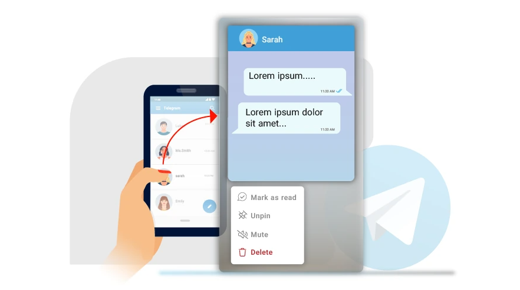

Telegram 最新动态
如何隐藏您最后一次在 Telegram 上看到的内容？
大多数消息应用程序都提供“上次查看”功能，让您的联系人知道您上次使用该应用程序是什么时候。流行的聊天···
10 04.2024
如何创建 Telegram 频道？
Telegram 成为Android 和 iOS 设备上第七大下载量应用程序。它的受欢迎可能是由于 ···
09 04.2024
如何复制 Telegram 个人资料、群组、频道、消息链接
Telegram 是新时代的消息应用程序之一，真正与WhatsApp展开竞争。然而，有许多新用户仍在···
08 04.2024
如何从 Telegram 下载多张照片或视频？
想象一下：您的朋友在 Telegram 上分享了你们最近聚会的多张照片。尽管Telegram 可以自···
07 04.2024

加速 Telegram 下载的 8 种最佳方法
Telegram 的一个常见问题是下载速度慢。而且，最近，用户在公共论坛上对此问题直言不讳。虽然其背···
06 04.2024
如何在 Telegram 上添加和设置自定义通知声音？
我喜欢为各种应用程序使用自定义通知。它们有助于快速确定哪个应用程序或联系人发送了通知。值得庆幸的是，···
05 04.2024

如何在不被人看到的情况下打开 Telegram 中的消息
如您所知，一旦您在 Telegram 上向某人发送消息，消息旁边就会出现一个灰色的复选标记，这表明消···
04 04.2024
Telegram 中的定时发送消息
假设您想在特定日期或时间向某人发送消息，但由于日程繁忙，您可能会忘记。在这种情况下，您可以使用 Te···
03 04.2024
更改 Telegram 群组中的通知声音
如果您加入了多个 Telegram 群组，并且所有这些群组中您收到的消息的通知声音都相同，您可能无法···
02 04.2024
Telegram 实时位置
在某些情况下，使用 Telegram Live Location 可能很有用。例如，如果您希望其他人···
01 04.2024
如何在 Telegram 中编辑消息？
在 Telegram 中编辑消息是该平台最吸引人的功能之一。因为我们都曾错误地将文本、照片或文件发送···
31 03.2024
如何删除 Telegram 中已发送的消息？
您可能会在 Telegram 中向某人发送错误消息，几分钟后您意识到自己的错误，并希望从收件人的聊天···
30 03.2024
如何从 Telegram 中删除贴纸？
现在在电报聊天时使用不同的贴纸是很常见的，以至于大多数人在私聊和群聊中使用不同的贴纸来表达自己的心情···
29 03.2024
如何删除 Telegram 中的个人资料图片
如果您已经活跃 Telegram 一段时间，您可能想更改您的个人资料图片。但是，平台不会自动删除旧的···
28 03.2024
为什么我的号码在 Telegram 中被禁止？
您是否曾在 Telegram 中收到过“此电话号码已被禁止”的通知？如果是这样，您可能想知道这意味着···
27 03.2024